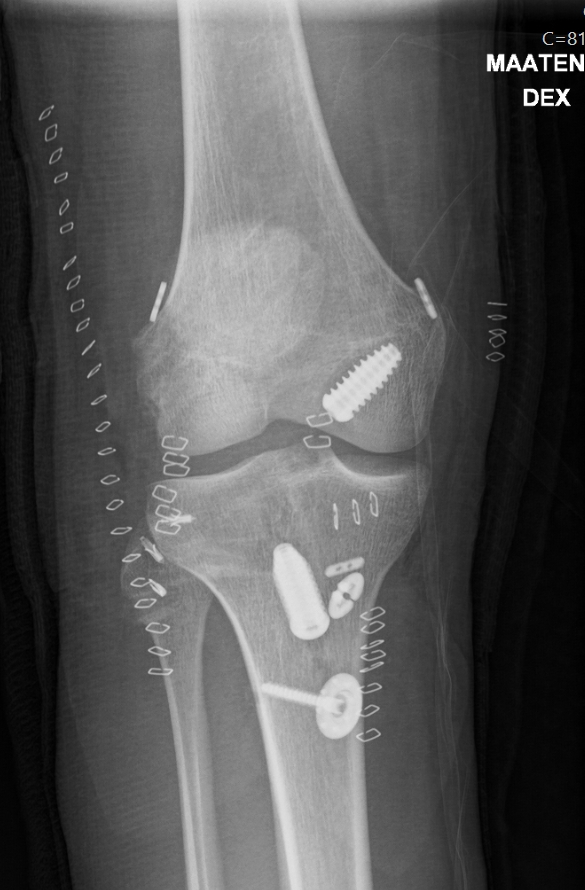

Simo Nortunen
Simo Nortunen
.jpg)
Takaristisiteen vammat
Takaristisidevamma (PCL) on harvinainen ja liittyy tyypillisesti aikuisten urheiluvammoihin tai liikennetapaturmiin. PCL-repeämä voi aiheutua esimerkiksi suorasta kontaktista tai törmäyksestä sääriluun yläosaan, jolloin sääri työntyy taaksepäin. Erityisen harvinaista on, että vain PCL repeytyy, sillä yleensä kyseessä on suurienerginen iskuvamma tai kiertovääntövamma, jossa myös muut nivelsiteet vaurioituvat.
Mikäli useampi nivelside vaurioituu samanaikaisesti, puhutaan moninivelsidevammasta (multiligamenttivamma, polviluksaatio). Tavallisimmat vammakombinaatiot ovat ACL+PCL ja ACL+PCL+LCL/PLC. Näissä tapauksissa polvi turpoaa merkittävästi ja kävely on vaikeaa. Isoloidussa PCL-vammassa kävely saattaa onnistua jo muutaman päivän jälkeen. Kliinisessä tutkimuksessa todetaan polven löysyys ACL:n osalta vetolaatikkotestissä tai pivot shift -testissä, ja PCL:n osalta sääriluun roikkuminen (posterioriseen suuntaan, sag sign). Sivusiteet ovat yleensä vaurioituneet vaihtelevasti. Moniligamenttivammoihin liittyy usein nivelkierukan repeämiä, rustoisia murtumia sekä hermo- tai verisuonivaurioita. Diagnoosin varmistamiseksi tarvitaan MRI-tutkimus, ja hoito tulee toteuttaa polvivammoihin erikoistuneessa yksikössä.
Moniligamenttivammat vaativat useimmiten leikkaushoitoa. Iäkkäämmät potilaat voivat pärjätä fysioterapialla ja yksilöllisellä polvituella, mutta myöhemmällä iällä tekonivel voi olla tarpeellinen. Urheilijoilla leikkaus on perusteltu, ja vakavasta vammasta huolimatta nuorilla urheilijoilla voidaan joskus todeta erinomaista toipumista. Isoloitu PCL-vamma on harvinainen, ja sen aiheuttama löysyys saattaa lajin mukaan olla hyvin siedettävä. Erityisen tärkeää on diagnosoida PCL-vamma nopeasti, sillä pikaisesti (mieluusti alle viikko vammasta) aloitettu säärtä eteenpäin työntävä PCL-ortoosihoito huolellisesti toteutettuna vähintään 6 viikon ajan tuottaa useimmiten erinomaisen tuloksen ilman leikkaushoitoa. Diagnoosin myöhästyessä ei ortoosihoito enää ennustetta valitettavasti paranna.
Intensiivinen fysioterapia parantaa alaraajan hallintaa ja lihaskompensaatio voi auttaa sietämään tilannetta. PCL- ja moniligamenttivammoissa käytetty leikkaustekniikka sisältää vaurioituneiden rakenteiden rekonstruktion jännesiirteillä. Jännesiirteenä voidaan käyttää hamstring-jänteitä, polvilumpiojännettä (BTB), quadriceps-jännettä tai kudospankin allograftia. Leikkauksen jälkeen polvea tuetaan sääriluuta aina PCL-ortoosilla. Varauskevennystä on syytä jatka noin 6 viikkoa mutta liikelaajuutta hakevat sekä isometriset harjoitteet voidaan aloittaa viimeistään kahden viikon kuluttua. Takareiden vahvistaminen aloitetaan varsinaisesti vasta noin 3kk toimenpiteestä. PCL-ortoosia käytetään 6-12 viikkoa vamman laajuuden mukaan, ja PCL-rekonstruktion lujittuminen kestää kuudesta yhdeksään kuukautta. Urheiluun paluu tapahtuu asteittain ja useimmiten vasta noin vuoden kuluttua. Polvituen käyttö urheilulajin mukaan voi olla perusteltua jopa 2 vuoden ajan leikkauksen jälkeen liikuntasuorituksen aikana.
Esimerkkitapaus: Polven moniligamenttivamma
Polven useamman nivelsiteen repeäminen samanaikaisesti tarkoittaa pahimmillaan, että polvi on käynyt vammahetkellä kokonaan sijoiltaan. Nämä ovat erittäin vakavia vammoja ja niihin liittyy usein myös verisuoni- tai hermovammoja. Valtimovammat tuleekin päivystyksellisesti poissulkea ja hoitaa viivyttelemättä. Muiden vammojen kirurginen hoito tehdään yleensä muutaman viikon kuluessa vammasta, kunhan pahin turvotus on mennyt ohi. Hoito on aina yksilöllistä vammatyypin mukaan ja on poikkeuksetta vaativaa niin kirurgisesti kuin myös kuntoutuksellisesti.
Tässä esimerkkitapauksessa verisuonivamman poissulku oli jäänyt päivystysyksikössä tekemättä mutta potilaan onneksi valtimovammaa ei ollut. Polvi oli käynyt sijoiltaan ja molemmat ristisiteet sekä kaikki ulkoreunan pehmytkudosrakenteet olivat revenneet kokonaan. Vain sisäsivuside oli säilynyt osittain ehjänä. Leikkaushoito tehtiin yksivaiheisena eli kaikki rikkoutuneet rakenteet rakennettiin uudelleen jännesiirtein ja lisäksi kiinnitettiin luisesta kiinnityksestään irronnut ulkoreunan nivelkierukka. Leikkaus kesti useita tunteja ja kuntoutus noin vuoden leikkauksen jälkeen. Polvi kuntoutui jopa poikkeuksellisen hyvin ja potilas palasi liikuntaharrastuksiinsa kilpatasolla. Tässä auttoi toki potilaan nuori ikä ja motivaatio kuntoutukseen, eikä lopputulos ole suinkaan aina yhtä hyvä näiden vammojen kohdalla.


